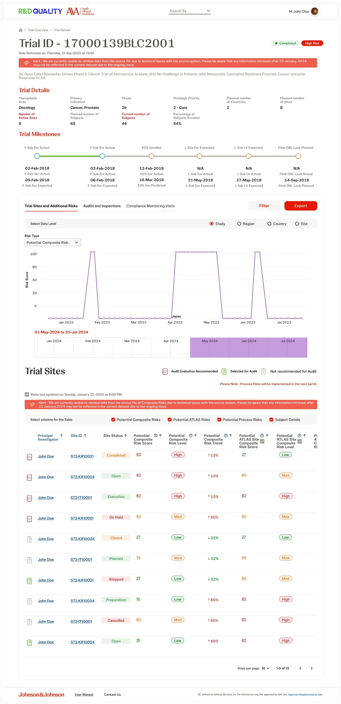
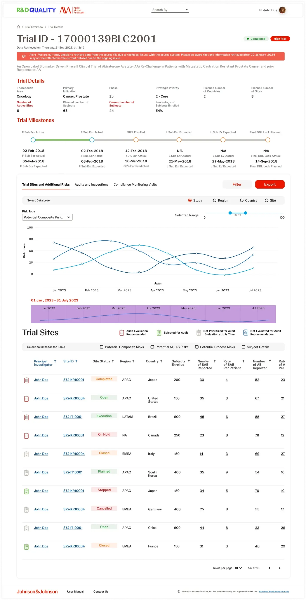

Case study 01 · AVA & Dosing Error Johnson & Johnson R&D Quality · TCS Interactive · 2023–24
Seeing risk before it reaches a patient
Two AI tools that flag risk in clinical trials, designed so quality teams can see why, check the data and make the final call.

Problem
Quality teams found trial risk by exporting data, colour-coding it in Excel and debating it by email: about two weeks, with no audit trail.
Insight
Users didn’t need more AI. They needed to see why a trial was flagged; in testing they kept asking “why red?”
Solution
One three-level risk scale, scores that show their reasons, and a person who confirms or overrides every flag.
Result
70% fewer task errors in usability tests, and 6 releases in 13 months.
Shared as a portfolio sample. Some screens are simplified, and confidential client data is not shown.
01 Context
Two AI tools, one question: where is the risk?
Dosing Error predicts which trials risk a dosing mistake. AVA (Audit Virtual Assistant) recommends which trials and sites to audit next. Both had to read the same way.
| Dosing Error | AVA | |
|---|---|---|
| Question | Which trials risk a dosing mistake? | Which trials and sites should we audit next? |
| When | From study design to close | During the trial, ahead of each audit cycle |
| Used by | Clinical teams and risk managers | Quality leads and auditors |
| Gives | A risk score, and mitigations from similar trials | A composite risk score per trial and site, and audit recommendations |
People with no time to dig
The readers are research scientists and doctors who open the tool between trials, patients and reviews. They need the answer, not the dataset.
“Show me which trials need attention.”
Research scientists
“I have five minutes before my next meeting.”
Doctors and clinical leads
What that meant for the design
- Answer first. The top high-risk trials and sites lead every page, before any detail.
- Three colours, one meaning. Risk reads at a glance, as a number, a word and an icon, never colour alone.
- Fewer interactions. One filter, one template and the same actions everywhere.
02 My role
What I owned, and what the team did
What I did
- Mapped the user journeys and designed every screen for AVA and Dosing Error, from wireframes to high fidelity
- Built and ran the design system in Figma: tokens, components, variants and usage notes
- Designed how risk is shown and checked: the three-level scale, score explanations, warnings and the override flow
- Planned and ran usability sessions, and turned findings into backlog items
- Built functional prototypes with Claude, and checked every release against the designs
What the team did
- Product owners set priorities and release scope
- Business analysts wrote requirements and sprint stories
- Data scientists built the risk models and scores
- Developers built the front end, back end and data pipelines
- J&J quality and validation leads reviewed and signed off each release
03 Workflow
From a risk flag to an audit decision
A misread score can send auditors to the wrong site while a real dosing problem goes unchecked. Before designing any screen, I mapped one task end to end and gave every step a safeguard.
| Step | What they see | What could go wrong | Safeguard |
|---|---|---|---|
| 1 Flag | Top sites, sorted by risk | A new high-risk site is buried | Risk-first sort; new sites pinned and counted |
| 2 Understand | The factors behind the score | The score reads as a verdict | Labelled a recommendation, linked to data |
| 3 Check | Data date and patient count | Acting on old or thin data | Data date on every score; “Limited data” under 20 patients |
| 4 Decide | Confirm, override with reason, keep watching | Dismissed in one click | Reason required; no bulk dismiss |
| 5 Record | Decision, reason, name and time | No record of why | Every decision logged and exportable |
| 6 Follow up | Past decisions beside the new score | Risk rises again, unseen | A rising score re-flags the site |
Before
Export from several systems → colour-code in Excel → debate by email → decision in meeting notes.
About 2 weeks · no audit trail
After
Flag, sorted and counted → reasons in the score → decide in place → logged with reason.
Same day · fully traceable
Reviewed with J&J R&D Quality and the CSV team for GxP validation. Nothing about how risk is shown shipped without their sign-off.
04 Research
Tested with the people who use it
How the 70% was measured
Participants did the same five tasks on the old screens and the redesign: find the riskiest site, filter by region and score, and export. A wrong answer, filter or row counted as an error.
Errors per session on the same five tasks, indexed so the old screens = 100. Limit: a usability measure, not live use.
05 Decisions
Saying no, and getting to yes
No percentage on the risk score
The ask: “73% chance of a dosing error” on every trial.
My call: I pushed back. The model isn’t calibrated for that, and false precision invites false trust.
Outcome: three levels plus the factors behind them, faster to read and easy to defend.
Three risk levels, not five
The clash: data science wanted 5 levels, developers wanted to reuse old colours, J&J quality wanted their RAG scale.
My call: a 90-minute workshop where everyone sorted 20 real scores alone.
Outcome: five levels split the room; three didn’t. Agreed, logged, never reopened.
06 Delivery
6 releases in 13 months
I worked in two-week sprints with product owners, BAs and developers, with design one sprint ahead of build. Each release answered one question, and the next was shaped by what people did with it.
- V1.0Sep 2023Trial overview and risk scaleWhich trials need attention?
- V1.1Nov 2023Score explanationsUsers kept asking “why red?”
- V1.2Jan 2024One filter and exportThe same filter had been specced four times
- V2.0Apr 2024AVA launches on the same systemProven on Dosing Error first
- V2.2Jul 2024Override and audit trailEvery decision traceable
- V2.4Oct 2024Three new overviewsRisk across the portfolio
07 AI in my workflow
From requirement to working prototype, faster
Functional prototypes
Coded prototypes with real filtering, sorting and the override flow, so sessions tested behaviour, not static frames.
Copy and edge cases
Drafted risk labels and warnings, and listed edge cases (no data, one patient, old data). Quality reviewed the final words.
Synthesis
Grouped session notes into themes, which I then checked against the recordings.
Guardrails: no patient or confidential trial data went into AI tools. Prototypes ran on synthetic data, and I reviewed every output before it reached the team.
08 The product
One template, four lenses on risk
Quality leads look at risk by trial, therapeutic area, compound and region. Instead of four bespoke dashboards, one overview template swaps its lens and keeps the same filters, tables and exports.



09 Impact
Safer decisions, shipped in small steps
What worked
Mapping what could go wrong before designing any screen.
What I’d change
Test with auditors sooner: the override reason came in V2.2, but belonged in V1.
What I’d measure next
Live use: time from flag to decision, and how often overrides are reversed.
Next case study · 02
What It Takes to Move →